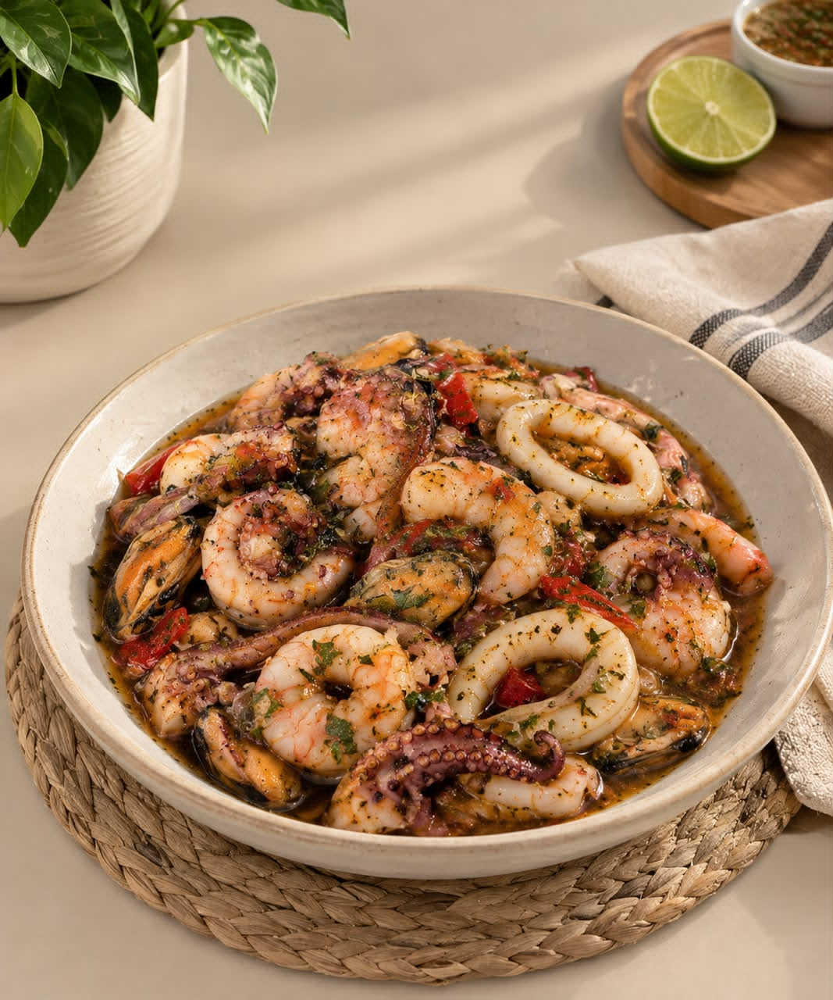

La Fosforera de Pampatar es un plato tradicional de la Isla de Margarita, Venezuela. Su origen se remonta a la cultura pesquera de la región, donde los mariscos frescos eran parte esencial de la alimentación de sus habitantes. Con el tiempo, esta deliciosa mezcla de sabores del mar se convirtió en un ícono gastronómico de Pampatar, representando la tradición, la frescura y la esencia caribeña de la isla.
- Camarones
- Calamares
- Pulpo
- Mejillones
- Ají dulce
- Cebolla
- Ajo
- Tomate
- Pimentón
- Especias (orégano, laurel, pimienta)
- Salsa de tomate
- Vino blanco (opcional)
- Aceite de oliva o vegetal
- Sal

- 1 Mantén el producto congelado hasta el momento de prepararlo.
- 2 Coloca el paquete sellado al vacío en agua fría (sin abrir) y deja descongelar por 12 a 24 horas en el refrigerador.
- 3 Una vez descongelado, abre el paquete y vierte el contenido en una sartén o caldero.
- 4 Calienta a fuego medio durante 8 a 10 minutos, removiendo ocasionalmente, hasta que esté bien caliente.
- 5 Si deseas, puedes añadir un poco de aceite de oliva o mantequilla para realzar el sabor.
- 6 Sirve y disfruta. Puedes acompañarlo con arroz, tostones o una ensalada fresca.
No es necesario volver a sellar al vacío.
Solo conserva el producto en refrigeración una vez abierto y consúmelo en un máximo de 2 días.
No recomendado para:
- Personas alérgicas a los mariscos.
- Personas con problemas de ácido úrico (gota).
- Personas con enfermedades gastrointestinales en fase aguda.
- Personas con hipertensión (por su contenido de sodio).
Siempre es importante consumirlo con moderación y, en caso de duda, consultar a un médico.
¡El auténtico sabor de nuestra isla!